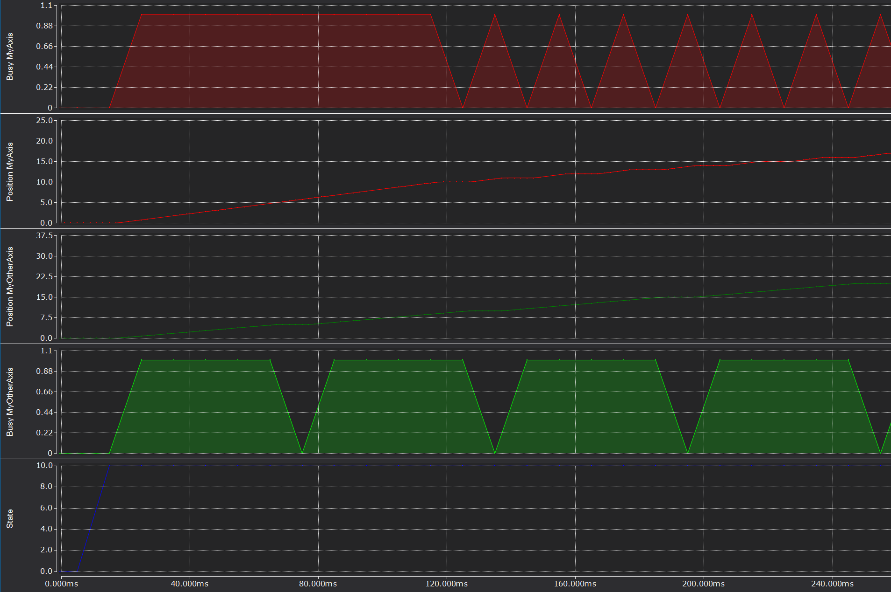
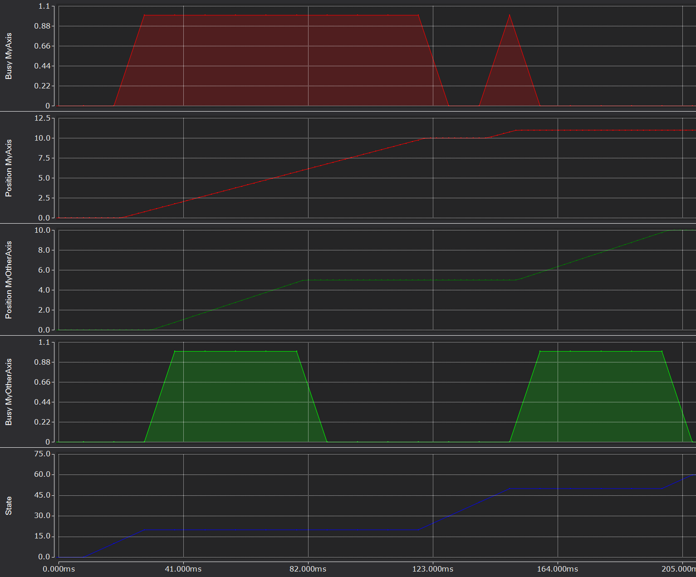
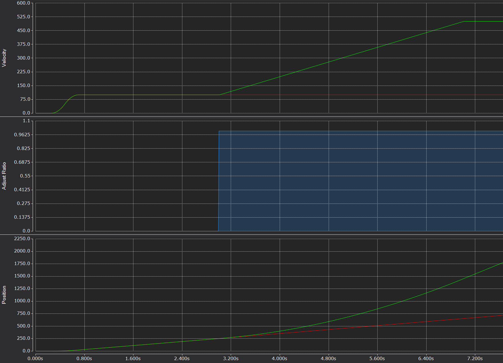
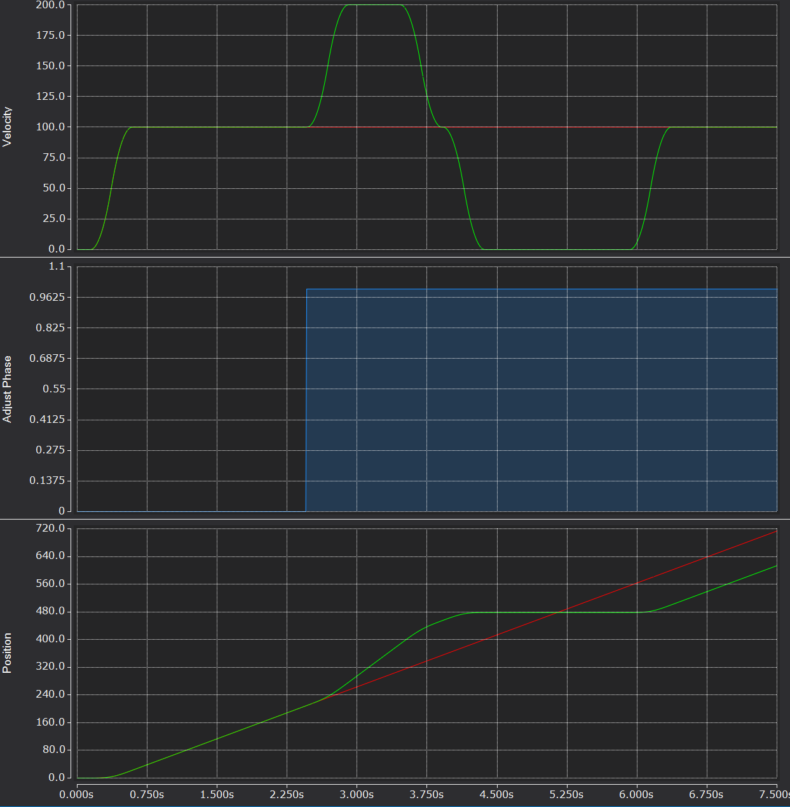
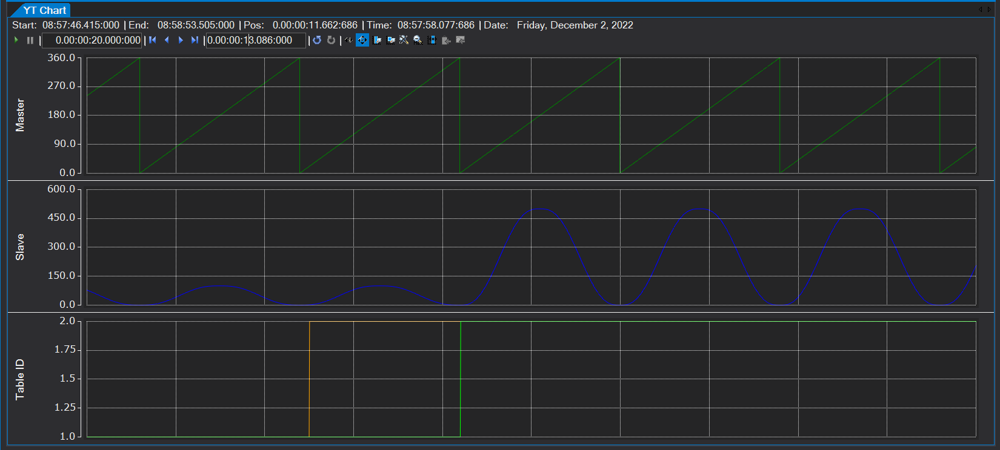
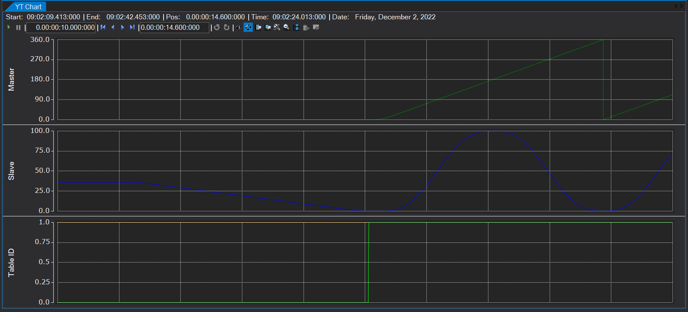
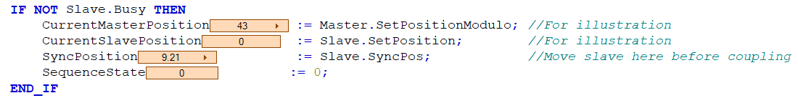
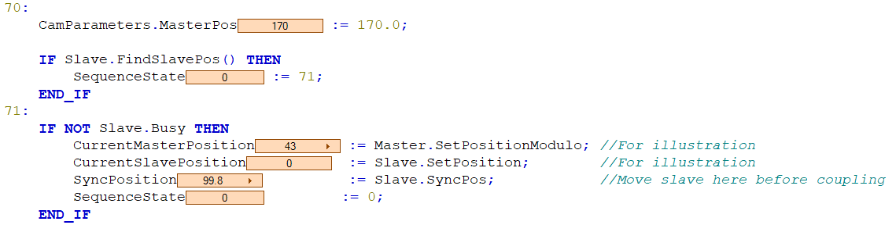

Function Blocks
Axis Types
FB_BasicAxis
(extends FB_CyclicFB, implements I_BasicAxis)
Complete implementation of I_BasicAxis. For use as a PackML component, use FB_Component_BasicAxis.
READ ALL OF ME
- The
Initialize()method checks to see if the underlying AXIS_REF has been linked to an NC axis. If not,Initialize()will not returnTRUE. - This behavior can be inhibited by setting the library parameter
ALLOW_UNLINKED_NC_AXEStoTRUE. - The
Initialize()method automatically reads all of the axis' NC parameters, which can be accessed via theNCParametersproperty. CyclicLogic()should be called so that underlying function block calls are madeBOOLreturn values from command methods should be interpreted as "COMMAND ACCEPTED". This is not "COMMAND COMPLETED". Monitor theBusyproperty to detect when a command has finished (see example below).- Most commands are internally interlocked with
_Busysuch that a command will not be accepted (returnTRUE) if a command is already in process. This can be bypassed (move interrupted) by passingTRUEto theAbortPreviousargument of the move method call. If theAbortPreviousargument is not included in the method signature, this should be interpreted to mean the command will take place immediately.
Properties
Axis
PROPERTY Axis : REFERENCE TO AXIS_REF
Returns a reference to the underlying NC axis for use in other axes or otherwise external motion functions.
Example
1 2 3 4 5 6 7 8 9 10 11 12 13 14 15 16 17 18 | |
ExternalSequence
PROPERTY ExternalSequence : I_MotionSequence
The standard motion methods all execute function blocks with the BufferMode input set to MC_Aborting. In the case that your motion sequence requires some sort of buffering or blending, you can create a function block that implements I_MotionSequence and contains any sequence of motion commands you desire. RunExternalSequence() will call Execute() on your custom sequence function block.
HomeMethod
PROPERTY HomeMethod : I_MotionSequence
You can optionally assign an external sequence of events to occur when the Home() method is called. Assigning a function block which implements I_MotionSequence will automatically assign the axis' AXIS_REF for use in whatever function blocks you choose. The instantiation of custom home routine function block should take place in the parent of the FB_BasicAxis instance.
Default Home() Behavior
The default behavior is to set the current position as zero when this property is not set and Home() is called. There is an internal instance of FB_HomeRoutine_SetZeroHere which, if not overridden, is call by Home().
ResetMethod
PROPERTY ResetMethod : I_MotionSequence
You can optionally assign an external sequence of events to occur when the Reset() method is called. This can be useful, for instance, when using an AX5000 or some drive that needs a separate reset routine to be called in addition to MC_Reset. Assigning a function block which implements I_MotionSequence will automatically assign the axis' AXIS_REF for use in whatever function blocks you choose. The instantiation of custom reset routine function block should take place in the parent of the FB_BasicAxis instance.
Default Home() Behavior
The default behavior is to call MC_Reset when this property is not set and the Reset() method is called.
Methods
MoveVelocity()
1 2 3 4 5 | |
Important
The Velocity argument is allowed to be <= 0 (axis will stop--does not call MC_Halt). The Velocity argument will also be automatically transferred to the Velocity property of the function block!
Stop()
METHOD Stop : BOOL
Important
Stop() makes a call MC_Halt internally. MC_Halt can be interruped by a further motion command, whereas MC_Stop cannot.
Examples
Enabling Axis
1 2 3 4 5 6 7 8 9 10 11 12 13 14 | |
Command a discrete move
1 2 3 4 5 6 7 8 9 10 11 12 13 14 15 | |
Command a velocity move and then change velocity
1 2 3 4 5 6 7 8 9 10 11 12 13 14 15 | |
Proper sequencing of multiple axes
Resist the temptation to combine commands to multiple axes in the same state/line. Depending on the command, you can find yourself in a race condition.
Less typing, more headaches:
1 2 3 4 5 6 7 8 9 10 11 12 13 14 15 16 17 18 19 20 | |

More states, but axes go where you want them to:
1 2 3 4 5 6 7 8 9 10 11 12 13 14 15 16 17 18 19 20 21 22 23 24 25 26 27 | |

FB_BasicSlaveAxis
(extends FB_BasicAxis, implements I_BasicSlaveAxis)
Complete implementation of I_BasicSlaveAxis. For use as a PackML component, use FB_Component_BasicSlaveAxis.
Note
See FB_BasicAxis for documentation of base motion funcntions
Examples
Couple two axes at 1:1 ratio
1 2 3 4 5 6 7 8 9 10 11 12 13 | |
Adjusting ratio on the fly
1 2 3 4 5 6 7 8 9 10 11 12 13 14 15 16 17 18 19 20 21 22 23 24 | |
Result

Phase adjustments using multimaster gearing
You can gear a second (and third/fourth) master to the same slave axis. This can be useful when you need to make phase adjustments to a master/slave coupling (conveyor gapping, etc.) Moves made to the additional masters are superimposed against the other masters according to the dynamics of the phase adjustment moves.
1 2 3 4 5 6 7 8 9 10 11 12 13 14 15 16 17 18 19 20 21 22 23 24 25 26 27 28 29 30 31 32 33 34 35 36 | |
Result 
FB_CamSlaveAxis
(extends FB_BasicAxis, implements I_CamSlaveAxis)
Complete implementation of I_CamSlaveAxis. For use as a PackML component, use FB_Component_CamSlaveAxis.
Important
- See
FB_BasicAxisfor documentation of base motion functions CamParameters.CamTable[]holds cam definition data for 1 toParameters_NCCamAxis.CAM_SLAVE_AXIS_TABLEScam tables- Each instance of
ST_CamPointsholds 1 to1..Parameters_NCCamAxis.CAM_SLAVE_AXIS_MAX_CAM_POINTSofMC_MotionFunctionPoints(see Infosys) - Once a slave is coupled to its master,
CamParameters.TableSelectspecifies whichCamParameters.CamTable[]is to be run. The switch-out happens automatically and according toCamParameters.ChangeOptions. The default behavior is an instantaneous switch - Update
CamParameters.ChangeOptionsand useChangeMode()to modify this behavior - Table data of the currently running cam can be updated on the fly using
UpdateTable()after updatingCamParameters.CamTable[]. Same online change behavior mentioned above applies.
Examples
Hello, Camming!
1 2 3 4 5 6 7 8 9 10 11 12 13 14 15 16 17 18 19 20 21 22 23 | |
Coupling above table
1 2 3 4 5 6 7 8 9 10 11 12 13 14 15 16 17 18 19 20 21 22 23 24 25 26 27 | |
Update Online Change Mode
1 2 3 4 5 | |
Change Current Table Point Data
1 2 3 4 5 | |
Change To Different Table
1 2 3 4 | |
Result 
Pre-Couple Sync Behavior
StartSync()is called- Correct slave position according to current master position is looked up using
MC_ReadCamTableSlaveDynamics MC_MoveModulois performed on Slave to bring into sync with master according to camMC_CamInis executed--slave is now coupled

Manually Positioning Slave Prior to Coupling
It is possible that you might want to control the pre-couple synchronization move of the slave on your own. Use FindSyncPos() or FindSlavePos() to do this. After looking up the sync position and manually moving slave axis, use StartCouple() instead of StartSync().
FindSyncPos() Result 
FindSlavePos() Use 
Home Routines
FB_HomeRoutine_AbsHoming
1 | |
1 2 3 4 5 6 | |
1 2 | |
1 2 3 4 | |
Properties
| Property | Type | Access | Description |
|---|---|---|---|
| Parameters | ST_AbsHomeParameters | RW | Get/Set parameter structure |
FB_HomeRoutine_HardStop
1 | |
Sets torque limit and moves axis at a set velocity toward specified end of travel. When a mechanical interference is detected via increasing position lag, sets home to interference position.
Properties
| Property | Type | Access | Description |
|---|---|---|---|
| HomePosition | LREAL | RW | Get/Set position that should be set once hard stop is detected |
| Parameters | ST_StepBlockLagBasedParameters | RW | Get/Set parameter structure |
FB_HomeRoutine_SetPosition
1 | |
Sets current axis position equal to HomePosition property.
Properties
| Property | Type | Access | Description |
|---|---|---|---|
| HomePosition | LREAL | RW | Get/Set position that should be set |
FB_HomeRoutine_SetZeroHere
1 | |
Sets current axis position to 0.0
Hardware Utility Function
FB_ResetRoutine_CoEDrive
1 | |
Issues a basic MC_Reset command against the assigned axis. Default behavior for FB_BasicAxis, FB_BasicSlaveAxis.
FB_ResetRoutine_SoEDrive
1 | |
Issues a SoE reset command, followed by MC_Reset. For use with AX5000 drives.